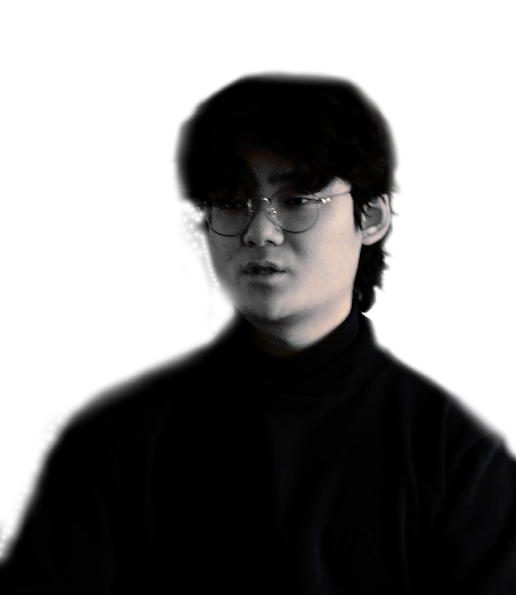
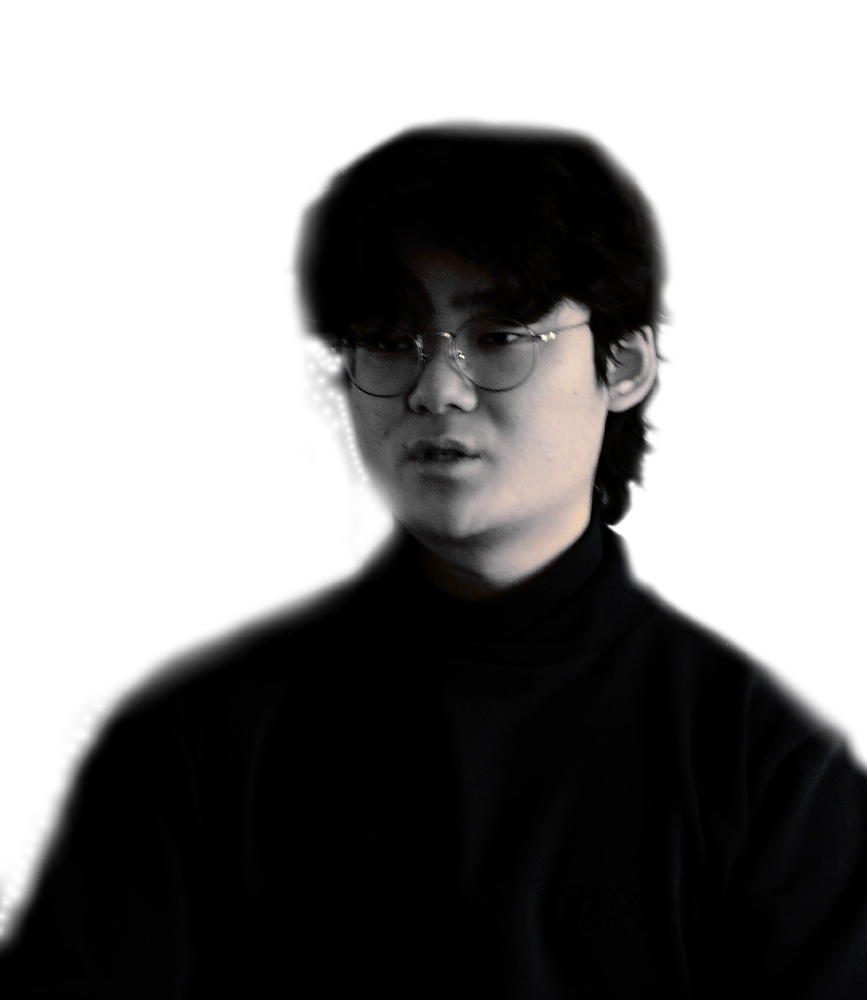

blog | resume | linkedin | email
hi im royce,
current undergraduate at the University of Michigan
studying computer science.
interested in brain-based machine learning, computational
neuroscience, and reverse engineering.
current work:
» Machine Learning Intern @ AbbVie
New Biological Entities (NBE) Analytical R&D Group
» Founder @ Stealth Startup
neuroscience-based machine intelligence applications
» Head of Research @ Quant
leading research team in de-correlated signals in the
equity space